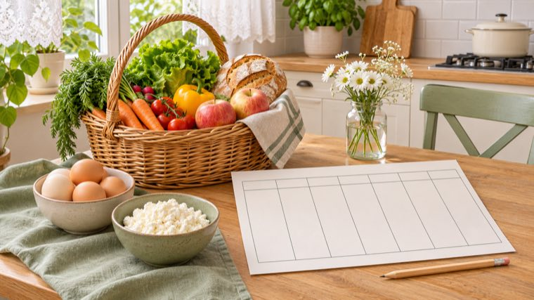
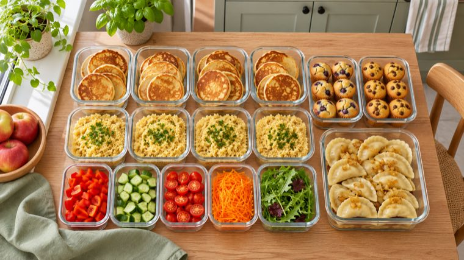
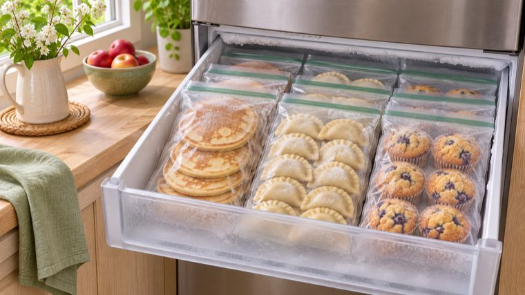
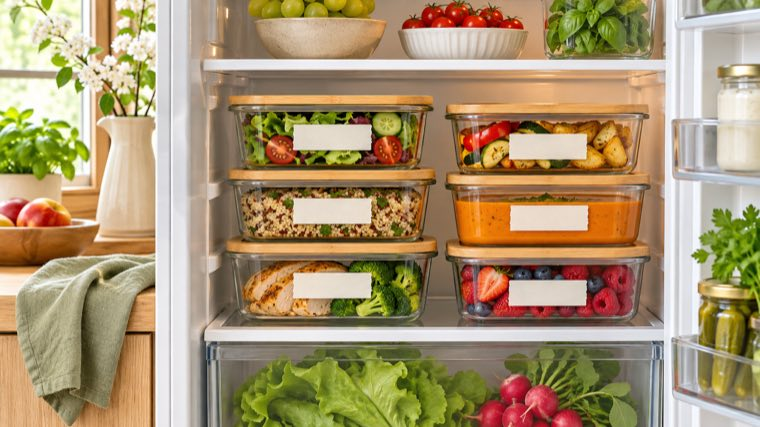
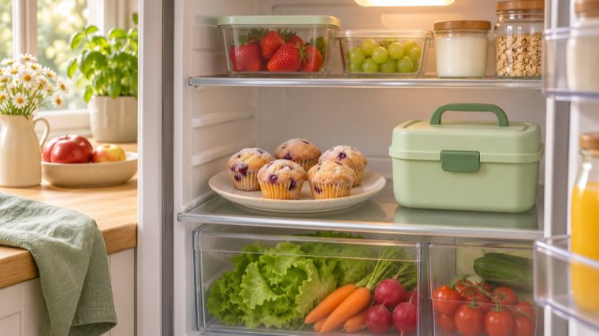
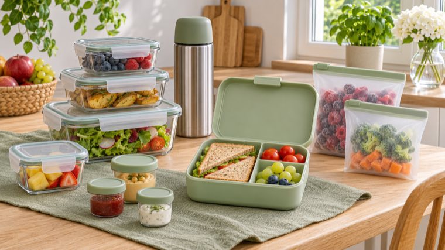

Poranki potrafią zaskoczyć. Jednego dnia brakuje pieczywa, drugiego czystego pojemnika, a trzeciego dziecko nagle nie ma ochoty na kanapkę, którą jeszcze wczoraj uwielbiało.
Ten poradnik pomoże Ci przygotować kilka prostych elementów wcześniej. Nie chodzi o idealny jadłospis ani o spędzanie niedzieli w kuchni. Chodzi o to, żeby w tygodniu mieć z czego wybierać.
Wszystko dopasuj do wieku dziecka, jego apetytu i zasad obowiązujących w przedszkolu lub szkole. Produkty kupisz w zwykłym sklepie, takim jak Biedronka czy Lidl. Nie potrzebujesz specjalnego sprzętu ani osobnej zamrażarki.

Kilka minut z kartką pozwala zobaczyć, co już masz w domu. Dzięki temu łatwiej wykorzystać otwarty twaróg, końcówkę pieczywa czy owoce czekające w zamrażarce. Zakupy stają się prostsze, bo wiesz, czego naprawdę brakuje.
Plan nie musi oznaczać pięciu gotowych śniadaniówek ustawionych w lodówce. Wystarczy przygotować bazę: porcję placuszków, kilka naleśników albo małe pizzerki. Rano dobierzesz do nich dodatki, na które Twoje dziecko ma ochotę.
Weekend daje też przestrzeń na rozmowę. Zapytaj dziecko, czy woli coś słodkiego, czy wytrawnego, i pozwól mu wybrać jeden dodatek. Taki mały wybór może ułatwić wspólne ustalanie menu.
Spójrz na tydzień. Zaznacz dni z dłuższym pobytem poza domem, wycieczką, zajęciami po szkole albo wspólnym posiłkiem w placówce. Inaczej zaplanujesz pudełko na krótki poranek, a inaczej na dłuższy dzień.
Otwórz lodówkę, zamrażarkę i szafkę. Spisz produkty, które już masz, oraz gotowe porcje czekające na wykorzystanie. Zerknij na daty na opakowaniach i sposób przechowywania podany przez producenta.
Nie musisz robić dokładnego spisu całej kuchni. Na początek wystarczy lista kilku rzeczy: pieczywo, jajka, nabiał, warzywa, owoce i przygotowane wcześniej dania. Potem wybierz jedną bazę, którą możesz podać na różne sposoby.
Zaplanuj dwie bazy na kilka dni, na przykład placuszki i małe pizzerki. Do tego wybierz świeże dodatki: ogórek, paprykę, jabłko, gruszkę albo mandarynkę. Dodaj rzeczy, które Twoje dziecko zna i lubi.
Możesz też przygotować naleśniki, a nadzienie zmieniać zależnie od dnia. Jednego dnia sprawdzi się twarożek, innego pasta warzywna. Jeśli dziecko woli osobne składniki, zapakuj je do oddzielnych przegródek.
Weź pod uwagę możliwość utrzymania odpowiedniej temperatury podczas drogi i pobytu poza domem. Dania wymagające chłodzenia zaplanuj do torby termoizolacyjnej z odpowiednimi wkładami chłodzącymi albo do lodówki dostępnej w placówce. Zupę czy sos zaplanuj tylko wtedy, gdy masz szczelny termos obiadowy i możliwość bezpiecznego utrzymania temperatury.
Zapisz propozycje na dni, w które rzeczywiście przygotowujesz śniadaniówkę. Nie musisz planować każdego kęsa. Wystarczy baza, dodatek i przypomnienie, co trzeba wyjąć z zamrażarki.
| Dzień | Baza | Dodatek | Co przygotować wcześniej |
|---|---|---|---|
| Poniedziałek | Placuszki | Gruszka i jogurt w osobnym pojemniku | Porcję placuszków przełóż do lodówki w niedzielę |
| Wtorek | Kanapka z pastą twarogową | Papryka | Sprawdź pieczywo i przygotuj pastę |
| Środa | Pizzerki | Ogórek w osobnej przegródce | Wyjmij porcję pizzerek we wtorek wieczorem |
| Czwartek | Naleśniki z twarożkiem | Jabłko | Rozmroź naleśniki w lodówce i dodaj świeże nadzienie |
| Piątek | Pieczywo z ulubionym dodatkiem | Mandarynka | Wykorzystaj produkty, które zostały po tygodniu |
To przykład, nie gotowy jadłospis dla każdego dziecka. Porcję i dodatki dostosuj do apetytu, wieku oraz możliwości przechowywania. Jeśli szkoła nie zapewnia chłodzenia, zaplanuj własną torbę z wkładami chłodzącymi.
Podziel listę według działów sklepu: warzywa i owoce, nabiał, produkty suche oraz rzeczy do zamrażania. Przy każdej pozycji zapisz tylko tyle, ile potrzebujesz do wybranych dań. Najpierw wykorzystaj to, co masz w domu.
Na liście mogą znaleźć się mąka, płatki owsiane, jajka, jogurt naturalny, twaróg, passata pomidorowa, ser, jabłka, marchewka i ogórek. To zwykłe składniki, z których można ułożyć kilka różnych zestawów. Nie musisz kupować ich wszystkich, jeśli planujesz tylko jedną bazę.
Zostaw jeden dzień elastyczny. Przyda się, gdy zostanie porcja z obiadu albo dziecko poprosi o coś innego. Plan możesz zapisać na kartce przy lodówce lub w notatce w telefonie.

Poniżej znajdziesz przykład jednej sesji, a nie wyścig z zegarkiem. Czas jest orientacyjny i zależy od sprzętu, przepisu oraz tego, czy ktoś Ci pomaga. Dania wymagające schłodzenia zapakuj i włóż do lodówki lub zamrażarki po przygotowaniu, zgodnie ze wskazówkami bezpieczeństwa poniżej.
Jeśli godzina to za dużo, zrób tylko jedną rzecz. Sama porcja placuszków albo kilka małych pizzerek też stworzy zapas na inny dzień. Drugą bazę możesz przygotować następnym razem lub zastąpić pieczywem.

Mrożenie może zmienić konsystencję i wygląd produktu. Warto najpierw zamrozić małą porcję i sprawdzić, czy po rozmrożeniu odpowiada Twojemu dziecku. Poniższa tabela opisuje przede wszystkim wygodę i jakość po rozmrożeniu.
| Produkt | Jak znosi mrożenie? | Praktyczny sposób |
|---|---|---|
| Placuszki | Zwykle dobrze | Ostudź, rozdziel papierem i podziel na małe porcje. |
| Naleśniki | Zwykle dobrze | Zamrażaj bez świeżego nadzienia, przełożone papierem. |
| Muffinki | Zwykle dobrze | Ostudź i zapakuj pojedynczo albo po kilka sztuk. |
| Pierogi | Dobrze | Rozłóż osobno do wstępnego zamrożenia, potem przesyp do woreczka. |
| Leniwe | Dobrze | Ugotowane i ostudzone podziel na porcje; możesz je rozdzielić, by się nie sklejały. |
| Kopytka | Dobrze | Ostudzone rozłóż osobno, a po zamrożeniu przełóż do woreczka. |
| Pizzerki | Zwykle dobrze | Upiecz, ostudź i zapakuj porcjami; świeże dodatki dołóż później. |
| Sosy | Wiele pomidorowych i warzywnych dobrze | Mroź w małych porcjach; sosy ze śmietaną mogą się rozwarstwiać. |
| Zupy | Wiele warzywnych dobrze | Podziel na porcje; zupy z nabiałem lub ziemniakami mogą zmienić konsystencję. |
| Pieczywo | Dobrze | Pokrój przed zamrożeniem i wyjmuj potrzebną liczbę kromek. |
| Owoce do koktajli | Dobrze | Umyj, osusz, podziel i zamroź w porcjach do miksowania. |
| Jajka gotowane | Raczej słabo | Białko po rozmrożeniu staje się gumowate; lepiej użyć świeżo ugotowanego jajka. |
| Ogórek | Słabo | Po rozmrożeniu traci chrupkość; pokrój świeży do pudełka. |
| Sałata | Słabo | Po rozmrożeniu więdnie; dodaj ją świeżą. |
| Jogurt | Zmienia konsystencję | Po rozmrożeniu może się rozwarstwić; do śniadaniówki wybierz świeży. |
Nadzienie ma znaczenie. Naleśnik bez dodatków może sprawdzić się lepiej niż naleśnik zamrożony z jogurtem i świeżym ogórkiem. Jeśli masz wątpliwość, zamroź samą bazę, a dodatki przygotuj później.

Poniższe czasy dotyczą domowych potraw przygotowanych ze świeżych składników i szybko schłodzonych po przyrządzeniu. Lodówka powinna mieć maksymalnie 4°C, a zamrażarka −18°C lub mniej. Czas w zamrażarce jest orientacyjnym limitem jakości; potrawa przechowywana w lodówce ma krótszy czas wykorzystania.
| Produkt | Lodówka | Zamrażarka | Wskazówka |
|---|---|---|---|
| Placuszki | Do 3 dni | Do 2 miesięcy | Schłodź i zapakuj w porcjach. |
| Naleśniki bez nadzienia | Do 3 dni | Do 2 miesięcy | Nadzienie dodaj po rozmrożeniu. |
| Muffinki domowe bez kremu | Do 3 dni | Do 2 miesięcy | Wersje z kremem wymagają osobnej oceny składników. |
| Pierogi ugotowane | Do 3 dni | Do 2 miesięcy | Czas dotyczy gotowych, szybko schłodzonych pierogów. |
| Leniwe i kopytka ugotowane | Do 3 dni | Do 2 miesięcy | Porcjuj po ugotowaniu i schłodzeniu. |
| Pizzerki | Do 3 dni | Do 2 miesięcy | Dodatki mięsne lub nabiał wymagają chłodzenia. |
| Sosy i zupy gotowane | Do 3 dni | Do 2 miesięcy | Rozlej do płytkich, mniejszych pojemników. |
| Pieczywo | Zwykle lepiej poza lodówką | Do 2 miesięcy | W lodówce szybciej czerstwieje; zamroź świeże. |
| Owoce do koktajli | Zależnie od rodzaju i stanu owoców | Do 3 miesięcy | Zamrażaj świeże, przygotowane owoce. |
| Jajka ugotowane na twardo | Do 7 dni od ugotowania | Nie zalecam | Przechowuj w lodówce; do pudełka użyj chłodzenia. |
| Ogórek i sałata | Zależnie od świeżości i opakowania | Nie zalecam ze względu na konsystencję | Sprawdzaj stan i warunki podane na opakowaniu. |
| Jogurt | Według opakowania | Nie zalecam do podania bezpośrednio po rozmrożeniu | Po otwarciu stosuj termin podany przez producenta. |
Podane czasy dla potraw domowych są ostrożnymi wskazówkami organizacyjnymi, a nie gwarancją bezpieczeństwa każdej receptury. Szczególnie zwróć uwagę na składniki, sposób przygotowania i warunki przechowywania. Jeśli instrukcja producenta podaje krótszy czas lub inne warunki, zastosuj ją.
Nie przedłużaj czasu w lodówce tylko dlatego, że potrawa wygląda lub pachnie dobrze. Jeśli nie wiesz, jak długo stała poza chłodem albo czy była prawidłowo przechowywana, nie wkładaj jej dziecku do śniadaniówki. Datę przygotowania i zamrożenia zapisuj od razu, nie z pamięci.

Najprostszy sposób to przełożenie potrzebnej porcji z zamrażarki do lodówki poprzedniego wieczoru. Umieść ją w zamkniętym pojemniku na talerzu lub tacy. Rano sprawdź, czy się rozmroziła, i zapakuj z dodatkami.
Nie rozmrażaj jedzenia przez noc na kuchennym blacie. Niska temperatura w lodówce ogranicza namnażanie bakterii podczas rozmrażania. Po rozmrożeniu nie zamrażaj potrawy ponownie; zaplanuj porcję tak, żeby ją wykorzystać.
Jeśli zapomnisz wyjąć porcję, wybierz inny składnik z planu awaryjnego, na przykład pieczywo i świeży dodatek. Możesz też podgrzać zamrożoną potrawę zgodnie z przepisem lub instrukcją producenta, jeśli masz na to czas. W przypadku dania przeznaczonego do podania na zimno po podgrzaniu szybko je schłodź i utrzymuj w chłodzie podczas transportu.
Do zimnej śniadaniówki włóż odpowiednio schłodzone jedzenie oraz wkłady chłodzące w torbie termoizolacyjnej. Jeśli placówka ma lodówkę, ustal, czy dziecko może z niej korzystać. Gorący posiłek przewoź w termosie obiadowym przeznaczonym do utrzymywania temperatury, zgodnie z instrukcją producenta; nie traktuj zwykłego pudełka jak termosu.
Na każdym opakowaniu zapisz nazwę potrawy i datę zamrożenia. Dodaj liczbę sztuk lub porcji oraz składnik, który pomoże Ci odróżnić podobne dania. Przydatna będzie też data przygotowania, jeśli różni się od daty zamrożenia.
Przykładowa etykieta: „Placuszki jabłkowe, 4 sztuki, przygotowane i zamrożone 12.01”. Możesz dopisać „bez nadzienia” albo „z serem”, jeśli w zamrażarce masz kilka wersji. Użyj pisaka do mrożonek lub taśmy, która trzyma się suchego opakowania.
Ułóż starsze porcje z przodu, a nowsze z tyłu. Jeśli mrozisz w szufladzie kilka rodzajów jedzenia, zrób krótką listę na kartce lub w telefonie. Wykreślaj porcję wtedy, gdy ją wyjmiesz, a nie dopiero przy następnym planowaniu.

Wybierz opakowania przeznaczone do kontaktu z żywnością i mrożenia. Przy płynach zostaw trochę wolnego miejsca, ponieważ podczas zamarzania zwiększają objętość. Jeśli używasz szkła, sprawdź, czy producent dopuszcza je do zamrażania, oraz przestrzegaj jego instrukcji.
Płaskie pojemniki dobrze mieszczą pojedyncze porcje placuszków i pizzerek. Szczelny pojemnik sprawdzi się do sosu, a woreczek do mrożenia pozwoli ułożyć kromki pieczywa lub owoce płasko. Papier między naleśnikami pomaga wyjąć pojedyncze sztuki.
Dobieraj wielkość opakowania do porcji, którą zwykle wykorzystujesz. Duży pojemnik pełen sklejonych placuszków jest mniej wygodny niż kilka mniejszych porcji. Przed ponownym użyciem umyj i dokładnie osusz opakowanie zgodnie z instrukcją producenta.
Nie musisz wdrażać wszystkiego od razu. Wybierz jeden pomysł na najbliższy weekend, zapisz go na liście i zobacz, czy ułatwia Wasz poranek. Potem zachowaj to, co działa w Twoim domu.